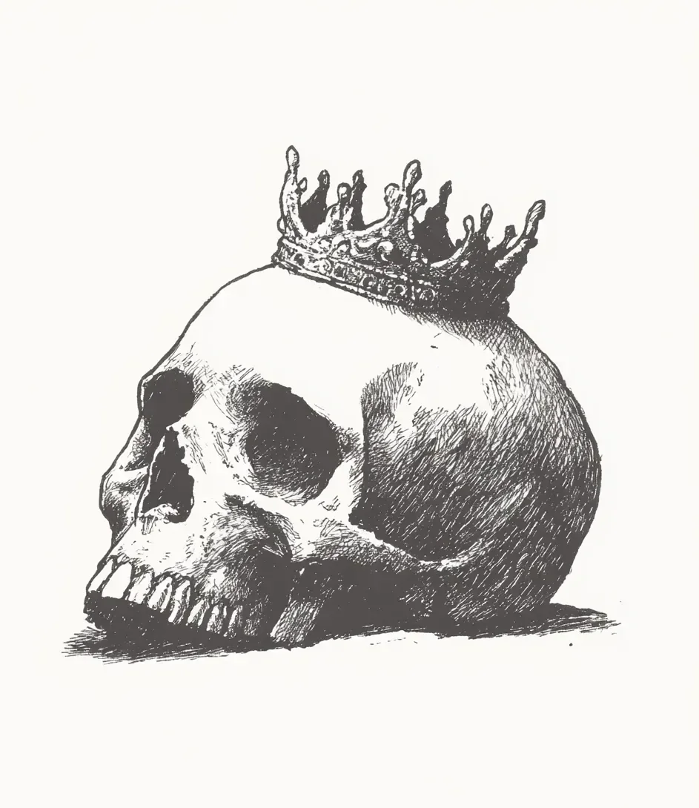

포위 공격이 시작된 지 엿샛날, 죽음은 아무런 요란함도 없이 찾아와 왕의 침대 발치에 무심하게 앉아 있었다.
[Death arrived without fanfare on the sixth day of the siege, seated casually at the foot of the royal bed.]
그 비현실적으로 가는 손가락과 두건 아래 움푹 파인 곳에 그림자가 고이는 듯한 모습이 아니었다면, 왕은 그 형체를 하인으로 착각했을지도 모른다. 밖에서는 투석기들이 오래된 성벽을 향해 돌을 던지고 있었는데, 그 규칙적인 타격음은 이제 심장 박동처럼 익숙해져 있었다.
[The king might have mistaken the figure for a servant if not for the impossible thinness of its fingers and the way shadows seemed to pool in the hollows beneath its hood. Outside, trebuchets hurled stone against ancient walls, a rhythmic percussion that had become as familiar as a heartbeat.]
“예상보다 이르군.” 왕이 말했다. 피로 젖은 복부의 붕대에도 불구하고 그의 목소리는 흔들림이 없었다. 왕이 의식이 없다고 생각했을 때 어의는 ‘감염'이니 '열'이니 하는 말들을 속삭였었다. “적어도 하루는 더 버틸 줄 알았는데.”
[“You’re early,” the king said, voice steady despite the blood-soaked bandages across his abdomen. The physician had whispered words like “infection” and “fever” when they thought him unconscious. “I expected at least another day.”]
죽음이 고개를 갸웃거렸다. 그 몸짓이 기묘하게 새 같았다. “나는 저항을 예상했지. 대신 순순히 받아들이는 걸 보니 신선하군.”
[Death tilted its head, the gesture oddly birdlike. “And I expected resistance. How refreshing to find acceptance instead.”]
왕의 침실은 여전히 권력의 상징들로 가득했다—정복 전쟁을 묘사한 태피스트리, 의전용 무기들, 벨벳 쿠션 위에 놓인 왕관까지. 이제는 모든 것이 무의미했다. 왕은 대관식 전 7년간의 섭정 기간을 거쳐 23년간 통치했다. 총 30년에 걸친 권력이었다. 그는 뼈와 깨진 서약 위에 제국을 건설했고, 왕좌를 차지한 자신을 결코 용서하지 않은 친동생의 반란군이 그의 유산을 돌 하나하나 무너뜨리는 동안, 자신은 이렇게 식은땀에 젖어 누워있는 결말보다는 어째서인지 늘 더 성대한 마지막을 상상해왔다.
[The royal chambers still bore the trappings of power—tapestries depicting conquests, ceremonial weapons, the crown itself resting on a velvet cushion. All meaningless now. The king had ruled for twenty-three years, following seven years as regent before his coronation—three decades of power in total. He had built an empire on bones and broken oaths, and somehow always imagined his ending would be grander than this: lying in his own sweat while the rebel forces of his own brother—who had never forgiven him for claiming the throne—dismantled his legacy stone by stone.]
“아플까?” 자존심이 다시 삼켜버리기 전에 질문이 먼저 튀어나왔다.
[“Will it hurt?” The question escaped before pride could swallow it back.]
“그게 중요한가?” 죽음의 목소리는 모래시계의 모래가 떨어지듯 의외로 부드러웠다. “어느 쪽이든 그대의 고통은 끝날 테니.”
[“Does it matter?” Death’s voice was surprisingly gentle, like sand falling through an hourglass. “Your suffering ends either way.”]
왕의 웃음은 기침으로 변했고, 하얀 시트 위로 붉은 피가 흩뿌려졌다. “이런 순간까지도, 속 시원한 대답 한번을 못 듣는군.”
[The king’s laugh turned into a cough that spattered red across white sheets. “Even now, I get no straight answers.”]
불현듯 기억이 밀려왔다—대관식장에 서 있던 순간, 관자놀이를 짓누르던 황금의 무게, 가슴을 울리던 군중의 함성. 첫 수확이 실패했을 때, 세금이 두 배로 올랐을 때, 아들들이 동방 원정에서 돌아오지 않았을 때, 그 똑같던 군중이 얼마나 빨리 등을 돌렸던가.
[Memory surged unbidden—standing in the coronation hall, the weight of gold pressing against his temples, the way the crowd’s roar had vibrated in his chest. How quickly that same crowd had turned when the first harvests failed, when taxes doubled, when sons didn’t return from eastern campaigns.]
“사람들은 날 폭군으로 기억하겠지.” 그의 말은 질문이라기엔 애매했다.
[“They’ll remember me as a tyrant,” he said, not quite a question.]
죽음이 어깨를 으쓱했다. “한동안은. 그다음엔 이름으로. 결국엔, 아무것도 아니게 되지.”
[Death shrugged. “For a while. Then as a name. Eventually, not at all.”]
죽음과의 내밀한 대화 너머로, 산 자들의 세상은 마지막 정리를 계속하고 있었다. 침실 문밖에서는, 왕이 몇 시간 전에 도망치라고 명했음에도 불구하고, 마지막 남은 세 명의 충성스러운 근위병이 자리를 지키고 있었다. 다른 모든 이들—조언가, 하인, 심지어 후궁들까지도—북쪽 성벽이 무너지자 성채를 버리고 떠났다.
[Beyond the intimate conversation with Death, the world of the living persisted in its final arrangements. Outside the chamber door, his last three loyal guards maintained their posts, though the king had ordered them to flee hours ago. Everyone else—advisors, servants, even his concubines—had abandoned the keep as the northern wall fell.]
“결국 이 모든 게 헛수고였군.” 왕은 힘없이 방 안을, 그리고 그 너머의 허깨비 같은 제국을 가리켰다.
[“All this for nothing, then.” The king gestured weakly at the room, at the phantom empire beyond.]
“영원을 기대했나? 산조차도 닳아 없어지는 법인데.”
[“Did you expect permanence? Even mountains wear away.”]
유난히 큰 굉음과 함께 천장에서 먼지가 떨어져 내렸다. 반란군이 외벽을 돌파한 것이다. 아마 몇 시간 후면 성채에 도달할 터였다.
[A particularly loud crash shook dust from the ceiling. The rebels had breached the outer wall. Hours, perhaps, until they reached the keep.]
왕의 입가가 뒤틀렸다. “나는 의미 있는 존재이길 바랐다.”
[The king’s mouth twisted. “I expected to matter.”]
“아.” 죽음이 몸을 앞으로 숙였다. 그 순간 왕은 두건 아래에서 공허가 아닌 끝없는 이해심을 엿보았다. “그 허기만큼은 결코 채워지지 않는 법이지요, 폐하.”
[“Ah.” Death leaned forward, and for a moment, beneath the hood, the king glimpsed not emptiness but endless understanding. “That particular hunger is never satisfied, Your Majesty.”]
창처럼 꿰뚫는 고통이 왕의 복부를 스치며 반박할 말을 앗아갔다. 고통이 잦아들었을 때, 그는 왕관을 응시하고 있는 자신을 발견했다—손가락처럼 뻗은 뾰족한 끝, 촛불 아래 놀랍도록 빛바랜 황금빛. 그 오랜 세월 동안 이 물건에 신비로운 힘이 담겨 있다고 믿었건만, 결국 인간의 손으로 빚어진 금속에 불과하다는 것을 깨달았을 뿐이다.
[Pain lanced through the king’s abdomen, stealing his retort. When it receded, he found himself staring at the crown—its points like reaching fingers, its gold surprisingly dull in the candlelight. All those years believing the object contained some mystical power, only to discover it was merely metal shaped by human hands.]
“내가 언제나 잔인했던 것은 아니야.” 왕은 죽음에게라기보다 자기 자신에게 속삭였다. “권력만을 위한 결정이 아니었던 순간들도… 있었지.” 그는 눈을 감았다. 원정 중에 살려주었던 마을들, 특정 죄수들에게 베풀었던 자비, 야망이라는 금화 더미 속에 동전처럼 흩뿌려진 작은 친절들이 떠올랐다. 저울의 균형을 맞추기엔 부족했지만, 장부를 복잡하게 만들기엔 충분했다.
[“I was not always cruel,” the king whispered, more to himself than to Death. “There were moments… decisions that weren’t only about power.” He closed his eyes, remembering villages he’d spared during campaigns, mercy granted to certain prisoners, small kindnesses scattered like copper coins amid the gold of ambition. Not enough to balance the scales, but enough to complicate the ledger.]
“나는…” 왕은 한 단어 한 단어 힘겹게 내뱉으며 조심스럽게 말했다. “작은 친절 하나를 받고 싶다.”
[“I would like,” the king said carefully, each word a labor, “a small kindness.”]
죽음은 무덤처럼 끈기 있게 기다렸다.
[Death waited, patient as the grave.]
“나를 진정으로 애도할 사람 한 명만 알려다오. 왕관이 아니라. 나를.”
[“Tell me one person who will mourn me truly. Not the crown. Me.”]
둘 사이에 침묵이 흘렀다. 멀리서 들려오는 비명과 타오르는 불꽃 소리만이 그 침묵을 깼다. 반란군이 아래층까지 도달한 것이다.
[Silence stretched between them, broken only by distant screams and the crackling of flames. The rebels had reached the lower levels.]
“정원사의 딸.” 마침내 죽음이 대답했다. “언젠가 빗속에서 그녀의 수레가 뒤집혔을 때, 그대가 멈춰서 도와준 적이 있었지. 그대는 그녀의 이름조차 몰랐다. 그녀는 동지 때마다 그대를 위해 촛불을 밝힌다.”
[“The gardener’s daughter,” Death finally answered. “You stopped to help her once when her cart overturned in the rain. You never knew her name. She lights a candle for you every solstice.”]
쓰리고 날것 같은 흐느낌이 왕의 목에 걸렸다. 마지막에 기댈 것이라곤 이토록 사소한 것이라니—잊힌 친절, 이름 모를 소녀, 어둠 속의 작은 불빛.
[A sob caught in the king’s throat, painful and raw. Such a small thing to cling to at the end—a forgotten kindness, a nameless girl, a tiny light in darkness.]
“시간이 되었다.” 죽음이 일어서며 말했다. 더 이상 침대 발치가 아닌, 왕이 아무것도 볼 수 없을 만큼 가까운 베개 옆에 서 있었다.
[“It’s time,” Death said, standing. No longer seated at the foot of the bed, but beside the pillow, close enough that the king could see nothing else.]
“그대의 이름을 알려주겠나?” 왕이 속삭였다.
[“Will you tell me your name?” the king whispered.]
그러자 죽음이 미소지었다, 혹은 그리 보였다. “이름은 경계선이다. 나는 모든 경계가 사라지는 곳이지.”
[Death smiled then, or seemed to. “Names are boundaries. I am the place where all boundaries dissolve.”]
침실 문이 부서지며 산산조각 났다. 갑옷을 입은 형체들이 쏟아져 들어왔다.
[The door to the chamber splintered. Armored figures poured through.]
왕의 손이 뻗어 올라갔다. 공격자들이나 왕관을 향해서가 아니라, 죽음이 내민 손가락을 향해. 그 손길은 깊은 우물물처럼 서늘했다.
[The king’s hand reached up, not toward his attackers or even toward the crown, but toward Death’s outstretched fingers. They were cool to the touch, like water from a deep well.]
“내가 알던 유일하게 정직한 포옹이군.” 왕이 중얼거렸다.
[“The only honest embrace I’ve known,” the king murmured.]
죽음의 대답은 소란 속에 묻혔지만, 중요하지 않았다. 왕은 이미 떠난 뒤였다. 그의 마지막 표정은 공포나 분노가 아닌, 기묘한 안도감이었다.
[Death’s reply was lost in the chaos, but it didn’t matter. The king was already gone, his final expression not one of fear or rage, but strange relief.]
왕의 피가 돌바닥에 스며들 때, 그의 죽음을 초월하는 무언가가 남았다—한때 그가 바랐던 이름이나 업적이 아니라, 잊힌 왕국보다 더 오래 살아남을 그의 해골 위에 놓인 왕관이라는 이미지였다. 수 세기 후, 이 왕관을 쓴 해골은 예술과 문학에서 하나의 상징이 될 것이었다—메멘토 모리, 즉 권력은 일시적이지만 죽음은 보편적이라는 경고. 이것이 잊힌 포위 공격의 엿샛날에 있었던 실제 왕과 실제 왕관, 그리고 실제 죽음에서 시작되었다는 것을 아는 이는 거의 없을 것이다.
[As the king’s blood soaked into stone, something transcended his passing—not his name or deeds as he’d once hoped, but an image: the crown upon his skull, which would outlast his forgotten kingdom. Centuries later, this skull with a crown would become an emblem in art and literature—memento mori, a reminder that power is temporary but ending is universal. Few would know it began with a real king, a real crown, a real death on the sixth day of a forgotten siege.]
그가 마지막 순간에 평생토록 깨닫지 못했던 것을 이해했다는 사실을 아는 이는 아무도 없을 것이다. 왕국은 조수처럼 일어섰다 스러지고, 왕관은 그저 금속에 불과하며, 작은 친절이야말로 그 둘보다 더 오래 살아남을 수 있다는 것을.
[None would know that in his final moment, he understood what had eluded him in life: that kingdoms rise and fall like tides, that crowns are merely metal, but that small kindnesses might outlast both.]
그리고 제국이 무너지고 별들이 소멸하는 것을 보았으며, 시작을 목격했고 마지막에도 함께할 죽음은, 이것이야말로 기다릴 가치가 있는 지혜라고 여겼다.
[And Death, who had seen empires crumble and stars expire, who had witnessed the beginning and would attend the end, considered this a wisdom worth waiting for.]